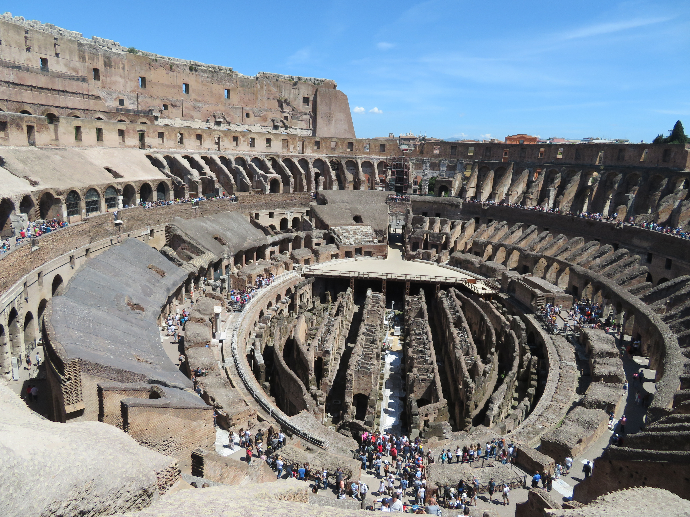
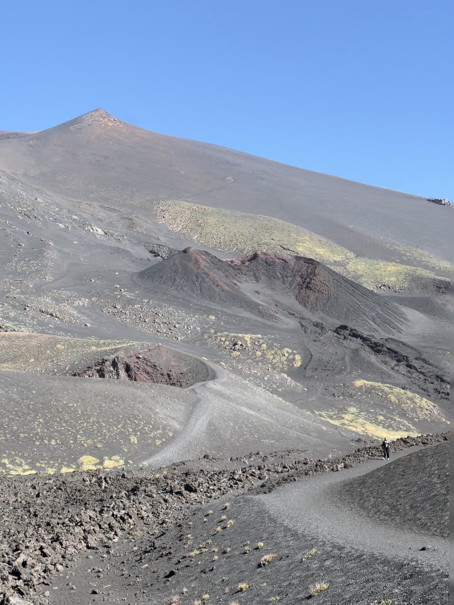
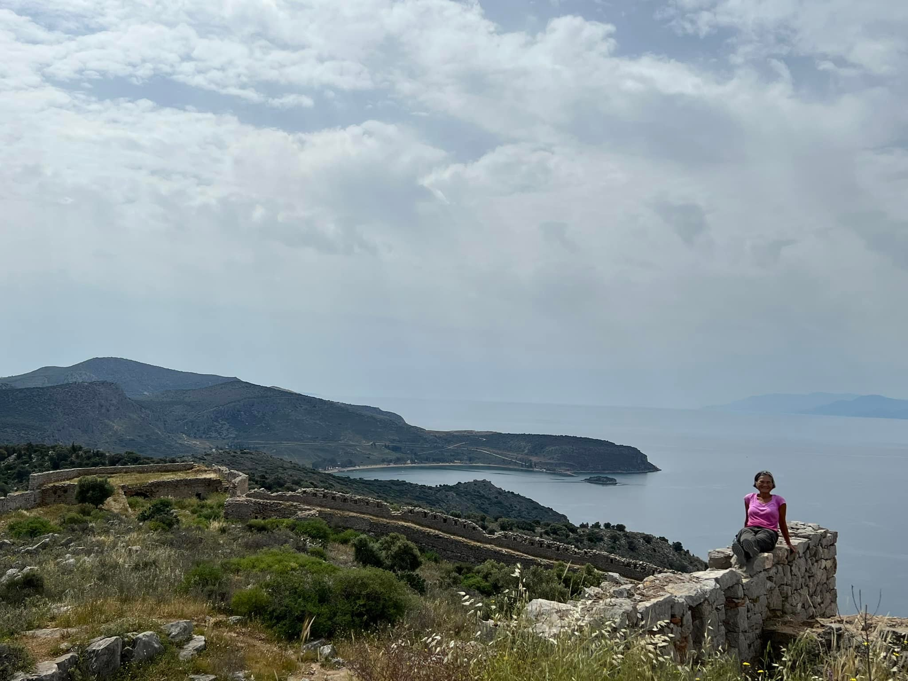
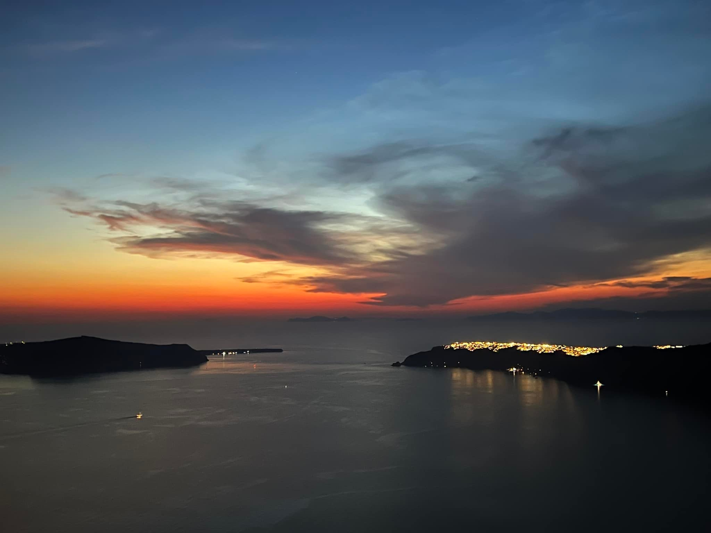
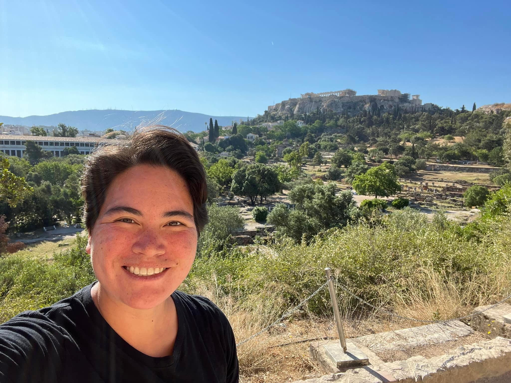
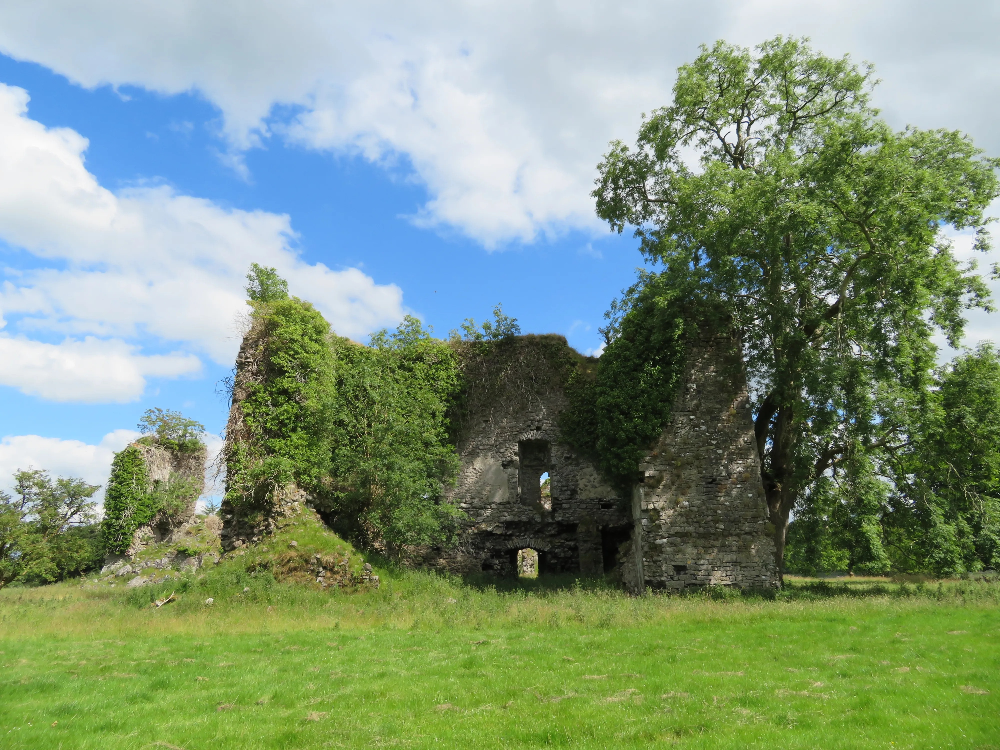

Europe
I am interested in going to Europe!
Italy
Possibly the most popular European country today and for good reason: Italy is packed with a remarkable variety of landscapes, history, art, culture and food. It takes multiple visits to begin to fully appreciate a dolce vita—the sweet life of Italy.
Highlights include:
- The three crown jewels: Venice, Florence, and Rome. Easily connected by train.
- From Venice, go north to explore the magnificent Dolomites and Alps, or further to classy Milan.
- From Florence, bask in the Tuscany countryside with world-class vineyards.
- From Rome, go south toward Naples for Pompeii and the Amalfi Coast.
-
Coastal towns: The two most picturesque (and popular)
are Amalfi and Cinque Terre.
- The Amalfi Coast runs from Positano to Amalfi Town, bookended by Sorrento and Salerno. Frequent ferries pack day trippers that crowd the narrow streets. But stay overnight and enjoy the charming towns in the quiet hours.
- Cinque Terre are five small villages cascading into the sea. They are visually spectacular and really fun to hike across.
- On the heel of the boot: Off-the-beaten-path and more authentic is the Puglia region on the southeast side, where daily siestas last for hours and locals outnumber tourists.
-
Popular islands:
- Sicily: The largest island in the Mediterranean, featuring rumbly Mount Etna, many Greek ruins, and Baroque towns.
- Sardinia: Features mountains surrounded by 1,000 miles of coastline along pristine waters.
- Capri: An easy ferry ride from Sorrento, the stuff of movies, with an overly hyped blue cave and more tourists than it can handle.
- Ischia: The quieter alternative to Capri, with great beaches, hot springs, and thermal parks.






Greece
Known for its stunning sea views and ancient history, Greece is a fantastic destination for all travelers! Although a Greek Isles cruise can be a great experience, we really recommend spending time on some individual islands to get the most of the experience.
Highlights include:
- The islands, especially Santorini and Naxos
- The history. Explore the ruins at Delphi and the ancient agora and Parthenon in Athens.
- The food and culture!







Ireland
There's so much to see and do in this small country, from exploring ancient castles to visiting the Cliffs of Moher to reveling in an island full of Puffins.

